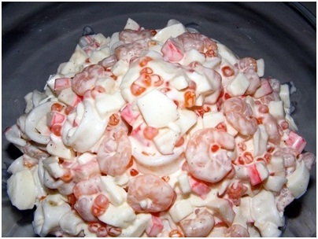

Рецепт салатовПосилання на таблиціВивчення форм На скачку Написати лист Перейти до заправки Яндекс 1. САЛАТ "НЕПТУН" Ингредиенты: -креветки-300 гр -кальмары-300 гр -крабовые палочки-200 гр -5 яиц -130 гр. красной икры -майонез Приготовление: 1. Отвариваем яйца, охлаждаем, отделяем белок от желтка, нарезаем белок. Желток можно оставить для украшения. 2. Варим креветки в слегка подсоленной воде. 3. Затем в кипящую воду бросаем, предварительно нарезав на кольца, кальмары. Самое главное-не переварить их, иначе получатся резиновыми! 4. Нарезаем крабовые палочки. 5. Теперь добавляем пару столовых ложек майонеза, перемешиваем, и только потом добавляем красную икру (чтобы не полопалась). Пункт 66. Соль-перец по вкусу, но советую солить после смешивания всего, т.к. икра и майонез могут дать достаточно соли. Для заправки:
Ингредиенты: |